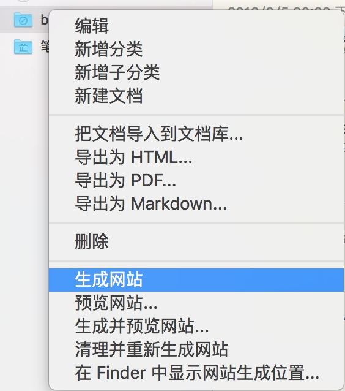

Mac 上自动发布到 github pages
理论上你有什么需要实时提交的 git repo 都可以使用这个方法，但为了节约，你需要设置 fswatch 的间隔时间
敝人乃懒人一枚，很久前购买了 myweb ，用来记点纯文本的笔记，偶尔发个 blog 到 github pages (github.io)。但是 myweb 是个 GUI 工具，发布到 github要换到 iTerm里自己输入命令 git add && git commit ，非常的麻烦，所以就又一次偷懒写了一个烂脚本，原则上适合用于所有的 app 自动发布到 GitHub。
首先， 确认你要发布的目录
我的 mweb 发布到 Github 的文件夹是 blog，如下图所示：

然后生成的网站目录在 /Users/bao3/Library/Containers/com.coderforart.MWeb/Data/Documents/MWeb/LocalData/Site/blog/，所以我的目标就是每次文件有变化时，就自动将文章发布到 github ，记住，重点是 “有变化时” 而不是每隔几分钟。
其次,安装自动发布工具
我们需要用到 fswatch 这个命令，这需要使用brew install fswatch
可选的一个 Shell 命令是 Proxychains4-ng，这个东西的主要用途是为 git 命令添加代理，以防止网络质量不佳。要使用这个命令就需要有一个 Socks 代理，如果你没有，就不要安装了，而我自己有一个shadowsocks-libev ，所以非常方便。
脚本主体
我不是个程序员，所以写出来的脚本有点“脏”，好在还能用，自己动手丰衣足食嘛；然后开始写我们的脚本吧：
#!/bin/bash
#$wdir is where your github blog dir
wdir=/Users/bao3/Library/Containers/com.coderforart.MWeb/Data/Documents/MWeb/LocalData/Site/blog/
export cmd=/usr/bin/git
#locate the 'fswatch' command ,you should install it via "brew install fswatch"
export fsdog=`which fswatch`
export proxy=`which proxychains4`
args="-0 -a $wdir/atom.xml"
function gitpush() {
$cmd add . ;
reslut=$($cmd commit -a -m "`date`" | grep nothing)
#when get $result length == zero ,means that there is new modified blog ,just git push in next!
if [ -z `$reslut` ] ; then
#Note : proxychains4 is a proxy tools which would let "git " use your proxy ( shadowsocks e.g.),just brew install it OR it would skip auto.
`$proxy -q $cmd push -q` || `$cmd push -q`
fi;
return 0;
}
cd $wdir;
#gitpush ;
export -f gitpush;
$fsdog $args | xargs -0 -n1 bash -c 'gitpush'
这段脚本实现的功能如下：
- 使用
fswatch实时 检测 myweb 的 blog 目录 - 一旦发现有新的博客文章，则会自动提交，并添加当时的时间为标记
- 提交时会优先使用
Proxychains4通过代理提交，如果没安装则自动使用 Git push 提交 - 只有变化的文章才会提交，所以非常省流量
- 每次你写完博客，只需要在 Myweb 里点 下面的菜单

happy Ending
保存你的这个脚本，例如名称为 gitpush.sh ，然后我们要生成一个 plist 让这个文件开机自动启动，这样就真的是完全自动化了。 plist 文件如下
<?xml version="1.0" encoding="UTF-8"?>
<!DOCTYPE plist PUBLIC "-//Apple//DTD PLIST 1.0//EN" "http://www.apple.com/DTDs/PropertyList-1.0.dtd">
<plist version="1.0">
<dict>
<key>Disabled</key>
<false/>
<key>EnvironmentVariables</key>
<dict>
<key>PATH</key>
<string>/usr/local/bin:/usr/bin:/bin:/usr/sbin:/sbin:/usr/local/sbin</string>
</dict>
<key>KeepAlive</key>
<dict>
<key>SuccessfulExit</key>
<false/>
</dict>
<key>Label</key>
<string>club.myauto.gitpush</string>
<key>ProgramArguments</key>
<array>
<string>/bin/sh</string>
<string>/Users/bao3/.wwwroot/custommymac/bin/gitpush.sh</string>
</array>
<key>RunAtLoad</key>
<true/>
</dict>
</plist>
然后可以将此文件 放在~/Library/LaunchAgents,然后运行 launchctl load -w ~/Library/LaunchAgents/XXXXXXX.plist 然后验证一下是否有启动 ps waux | grep fswatch